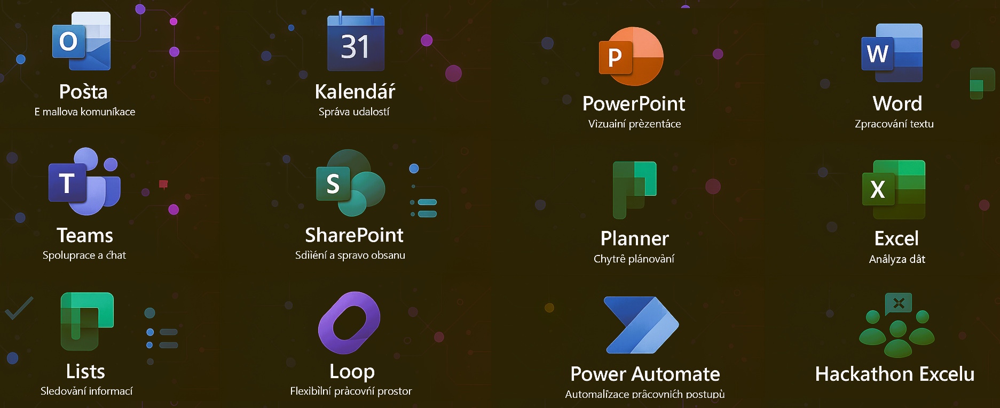
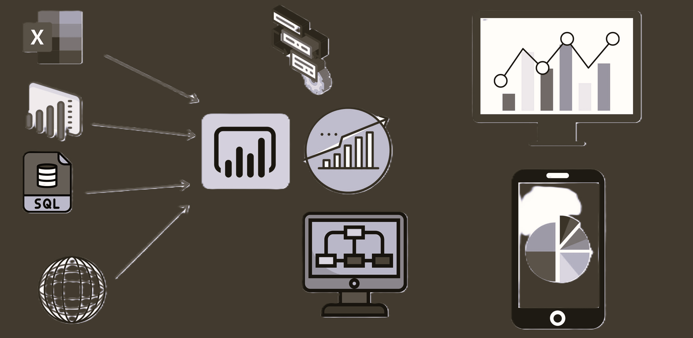

GitHub
GitHub
 LinkedIn
LinkedIn
Data Engineer | Systémový Inovátor
Občas vidím struktury a vzorce, které ostatní nevidí. Mám dar pronikat do skrytých systémů a nacházet řešení tam, kde ho jiní nevidí. Jak čtete v datech vy? Já čtu mezi řádky. Strašně rád se vrtám v datech a hledám ty skryté poklady, které tam někdo zanechal.


ETL/ELT Pipelines, Data Warehousing, Python & SQL
M365 Ekosystém, Power Platform, Power Automate
Power BI & DAX, GitHub Copilot, Excel Advanced
.
.
.